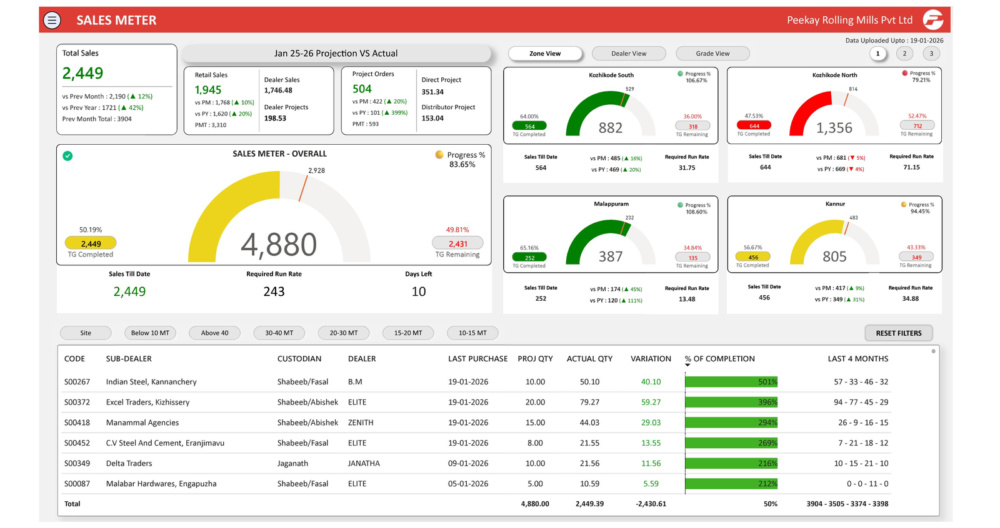
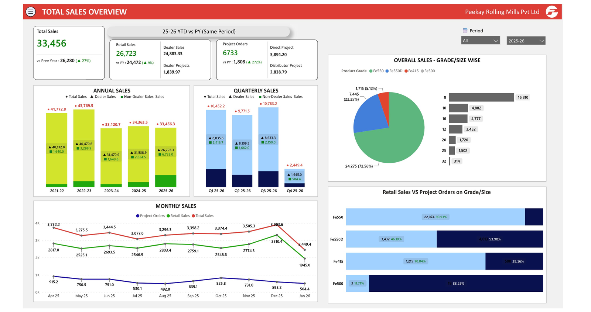

Live target tracking


Total Sales Overview — trend & grade-mix pageSales & Distribution Performance Dashboard
Multi-page sales tracking system for Peekay Rolling Mills, consolidating ERP exports into a live "Sales Meter" view that management could explore by zone, dealer, and sub-dealer — replacing a manual Excel-based consolidation process that ran on every reporting cycle.
- Built gauge-based target-completion tracking for each zone (Kozhikode, Malappuram, Kannur), showing sales-till-date against monthly targets and required run rate in real time
- Designed a sub-dealer drill table with month-over-month trend sparklines and % completion against projected quantity, so underperforming accounts surfaced automatically
- Linked Zone, Dealer, and Grade views from one data model, plus separate pages for project sales, annual/quarterly/monthly trend analysis, and incentive tracking